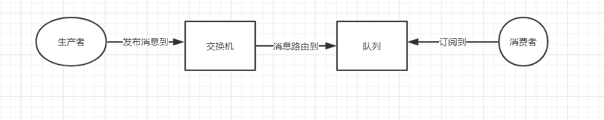
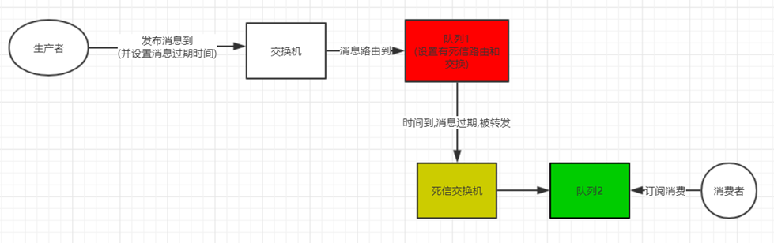
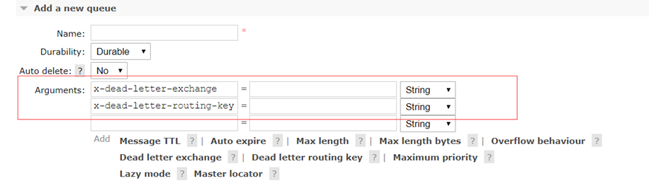
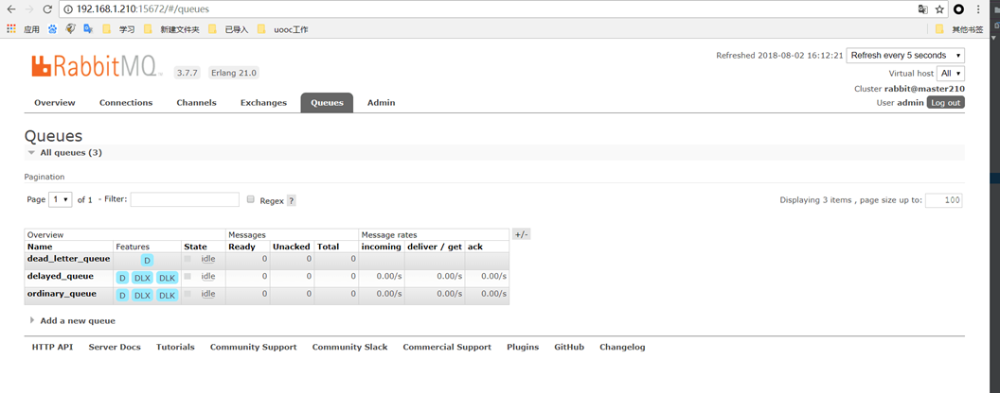
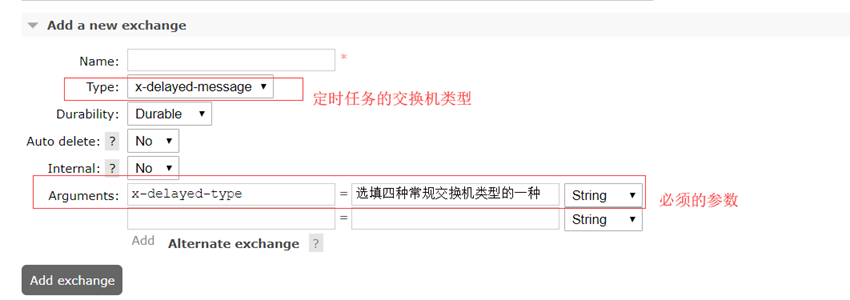
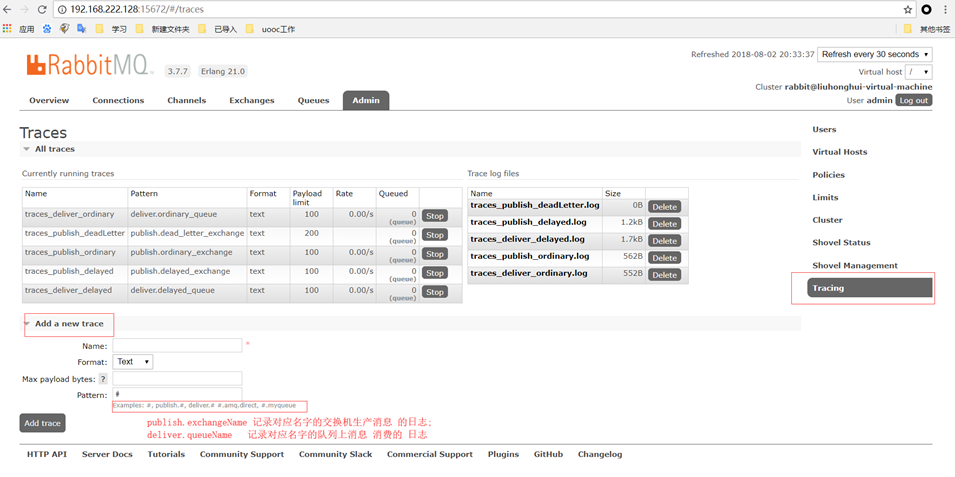
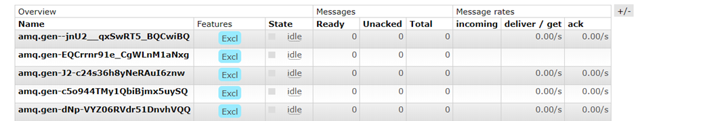

使用场景:
消息队列的主要特点是异步处理，主要目的是减少请求响应时间和解耦。所以主要的使用场景就是将比较耗时而且不需要即时（同步）返回结果的操作作为消息放入消息队列。
基本概念
1.Connection
网络连接，比如一个TCP连接。
2.Channel
信道。信道是建立在真实的TCP连接内地虚拟连接，AMQP 命令都是通过信道发出去的，不管是发布消息、订阅队列还是接收消息，这些动作都是通过信道完成。因为对于操作系统来说建立和销毁 TCP 都是非常昂贵的开销，所以引入了信道的概念，以复用一条 TCP 连接。
3.Publisher
消息的生产者，也是一个向交换器发布消息的客户端应用程序。
完成任务的整个流程:1.连接到RabbitMQ; 2.获取信道; 3.声明交换机; 4.创建消息; 5.关闭消息; 6.关闭信道; 7.关闭连接
4.Message
消息,它由消息头和消息体组成。消息体是不透明的，而消息头则由一系列的可选属性组成，这些属性包括routing-key（路由键）、priority（优先级）、delivery-mode（指定消息是否持久性存储）等。
5.Exchange
交换器，用来接收生产者发送的消息并将这些消息路由给服务器中的队列。
交换机的类型:direct、fanout、topic、headers ;
(1).direct(目前采用的): 通过路由键完全匹配、单播的模式;
(2). fanout:每个发到 fanout 类型交换器的消息都会分到所有绑定的队列上去。fanout 交换器不处理路由键，只是简单的将队列绑定到交换器上; 类似广播的形式;
(3). topic: 发布的消息有多个路由键(逗号分隔),然后将这些路由键拆分去与交换机和队列绑定的key匹配(可正则匹配),匹配上就投递到对应的队列上; 类似安装规则来进行投递;
(4). headers: 匹配 AMQP 消息的 header 而不是路由键，其他方面 headers 交换器和 direct 交换器完全一致
Binding
绑定，用于消息队列和交换器之间的关联。
消息路由由交换器、队列和绑定三部分组成。生产者把消息发布到交换器上；消息最终到达队列，并被消费者接受；绑定决定了消息如何从路由器路由到特定的队列。Queue
消息队列，用来保存消息直到发送给消费者。它是消息的容器，也是消息的终点。一个消息可投入一个或多个队列, 等待消费者连接到这个队列将其取走。Consumer
消息的消费者，表示一个从消息队列中取得消息的客户端应用程序。
完成任务的整个流程: 1.连接到RabbitMQ； 2.获取信道； 3.声明交换机； 4.声明队列； 5.把队列和交换机绑定起来； 6.消费消息； 7.关闭信道；8.关闭连接。
基本流程
消费者（consumer）订阅某个队列。生产者（producer）创建消息，然后发布到队列（queue）中，最后将消息发送到监听的消费者。

消息持久化
消息队列持久化包括3个部分:
- exchange持久化，在声明时指定durable => true
- queue持久化，在声明时指定durable => true
- 消息持久化，在投递时指定delivery_mode=> 2（1是非持久化）
注意:
如果exchange和queue都是持久化的，那么它们之间的binding也是持久化的。如果exchange和queue两者之间有一个持久化，一个非持久化，就不允许建立绑定;
持久化的消息存储在磁盘上;
死信
一个消息在满足如下条件下，会进死信路由
一个消息被Consumer拒收了，并且reject方法的参数里requeue是false。也就是说不会被再次放在队列里，被其他消费者使用。
消息设置的时间过期了, 或者队列设置保存消息的时间到了.
队列的长度限制满了。排在前面的消息会被丢弃或者扔到死信路由上。
Dead Letter Exchange其实就是一种普通的exchange，和创建其他exchange没有两样。只是在某一个设置Dead Letter Exchange的队列中有消息过期了，会自动触发消息的转发，发送到Dead Letter Exchange中去。

相关队列参数:

消息确认机制
1.消息确认机制的必要性:
执行一个任务可能需要花费几秒钟，一旦RabbitMQ将消息分发给了消费者，就会从队列中删除。在这种情况下，如果正在执行任务的消费者宕机，会丢失正在处理的消息和分发给这个消费者但尚未处理的消息;
这个时候消息确认机制就很有必要;
2.生成者发布消息的确认:
可以用事务处理 , 但耗损性能很大 , 所以一般发布消息不做确认;
3.消费者确认机制:
手动发送ACK应答;
目前对消费的处理:
消费成功利用ack应答成功, 日志记录消费该消息的队列以及消息的内容;
第一次消费失败的,利用nack加上参数AMQP_REQUEUE,将会把消息重新放入队列, 并且日志记录失败原因;
第二次还是消费失败的,转发到死信队列上,利用reject将消息从原队列上移除 ,日志记录哪个队列发送了死信
插件
- rabbitmq-management (web管理界面)

2.rabbitmq_delayed_message_exchange (延迟消息)
Rabbitmq实现定时任务的两种方式:
(1).利用死信队列 + 设置消息过期时间来实现;
缺点:队列1中消息不是按照规定的过期时间先后来被转发, 因为队列它的特性是先进先出;(该方式只能结合优先级来解决简单的定时任务)
(2).给rabbitmq增加delayed message插件,让交换机支持定时投递消息
交换机类型和参数的设置:

发布到该交换机的消息须设置headers参数:
X-delay = 毫秒时间 (消息将在该时间后,从交换机上发送到队列 ,然后被订阅的消费者消费)
- rabbitmq_tracing (消息日志记录)
rabbitmq_tracing插件会对流入流出的消息做封装，然后将封装后的消息日志存入相应的trace文件之中。
开启该插件 , 然后进入web界面就能操作:

可以发现当添加了一个trace , rabbitmq会自动生成一个对应的和日志相关的队列

由于这些自动生成的队列不具有属性durable => true
所以rabbitmq-server 服务重启会导致这些队列丢失,对应的日志追踪的trace丢失;但是之前的日志文件还是存在;
日志文件可以选择text或者json格式,可以设置每条日志信息的最大长度;
日志默认存放位置/var/tmp/rabbitmq-tracing
日志还可以在web管理端查看